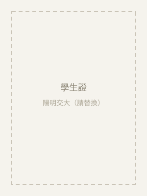
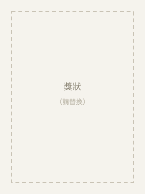
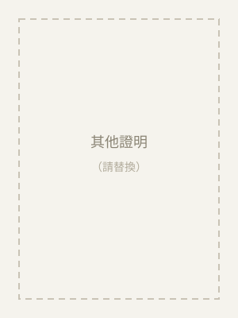

學歷經得起檢驗
陽明交大數據科學與工程研究所碩士生，資訊工程＋管理科學雙主修。會考 5A9+，成績單與學生證都可出示（見下方證明文件）。
陽明交大數據科學與工程研究所碩士生，資訊工程＋管理科學雙主修。會考 5A9+，成績單與學生證都可出示（見下方證明文件）。
會考 5A9+、寫作 5 級分、多益 870——這些分數不是天賦，是方法。我教的就是我自己用過、驗證有效的讀書方式。
曾任國小英文與數學老師、大學社團教學組。孩子卡住時我會換方法再講一次，而不是叫他「回去多練」。
直接用學校課本、講義、考卷與段考範圍教學，不必額外買教材，進度和學校同步，成績反映最直接。
下課後用 LINE 跟家長簡短回報：今天教了什麼、孩子哪裡卡住、接下來的計畫。家長隨時掌握狀況。
研究生時間彈性，平日晚上、週末皆可排課；段考前可加課衝刺，也可改線上課，不因故取消課程。
觀念理解 → 題型拆解 → 段考與會考實戰。針對孩子的弱點章節補強，不用題海戰術硬撐。
文法邏輯化、單字有系統地記。多益 870、雅思 6.5，從國中打好英文底子，一路用到大學。
用生活例子把抽象觀念講具體，公式知道「為什麼」，自然記得住、用得出來。
高一、高二數學；高一、高二物理（可議）。適合想提前銜接或高中持續配合的學生。
幫孩子排讀書計畫、建立複習節奏與筆記方法——比多上一科更能長期影響成績。
Python／C++ 入門、正確使用 ChatGPT 輔助學習。讓孩子提早具備 AI 時代的基本能力。
您請到的不只是一位家教，而是一位能帶孩子面對 AI 時代的學習教練。
我的原則很簡單：先懂，再熟，最後才快。 死背可以應付一次小考，理解才撐得起會考。每個孩子卡住的點不一樣， 所以我依孩子目前的程度調整教法與進度，用學校的課本和考卷教， 並且把「怎麼複習、怎麼安排時間」一起教給孩子—— 家教的目的，是讓孩子最終能自己學。
「（此處為示意占位文字）老師很有耐心，孩子數學段考從 60 幾分進步到 80 分以上，每堂課後都會跟我回報狀況。」
「（此處為示意占位文字）老師會教我怎麼整理筆記和安排複習，現在自己讀書比較有方向，不會慌。」
「（此處為示意占位文字）年輕老師跟孩子溝通沒有距離，也會教他正確使用 AI 查資料，我覺得很加分。」
＊ 以上為版面示意，將於取得真實回饋後更新。
所有資歷都有文件可查，家長可安心確認。





我不會假裝自己是十年資深名師。但我有國小英文、數學的實際教學經驗，加上自己一路從會考 5A9+ 考進陽明交大的完整經驗——國中的考試方法，我自己就是最近走過的人。年輕的優勢是跟孩子沒有距離、講的方法孩子聽得進去。歡迎先試教一堂，用實際上課品質判斷，不用只聽我說。
依年級與科目計費，國中每小時約 NT$600–800（高中另議），單次上課建議 1.5–2 小時。詳細費用歡迎 LINE 詢問，我會依孩子的需求與上課頻率報價，價格透明、不綁約、不推銷課程包。
可以。建議先安排一堂試教，讓孩子實際感受上課方式，也讓我了解孩子的程度與弱點。試教後您再決定是否長期配合，完全沒有壓力。
新竹市、竹北為主，可到府教學或約圖書館等公共空間；也提供線上一對一（視訊＋電子白板），臨時有狀況可彈性改線上，課程不中斷。
不需要。我直接使用孩子的學校課本、講義與考卷教學，跟著學校進度與段考範圍走。若有需要，我會免費補充自製講義與練習題。
平日晚上與週末皆可，每週固定時段為主，段考前可彈性加課。確定配合後我會與家長約定固定時間，若需調課會提前告知。
每堂課後我會用 LINE 簡短回報：今天上了什麼、孩子的狀況、回家要完成的練習。段考後也會跟家長一起檢視成績與調整方向。
留下孩子的狀況，我會在 24 小時內回覆。也歡迎直接加 LINE 聊聊。